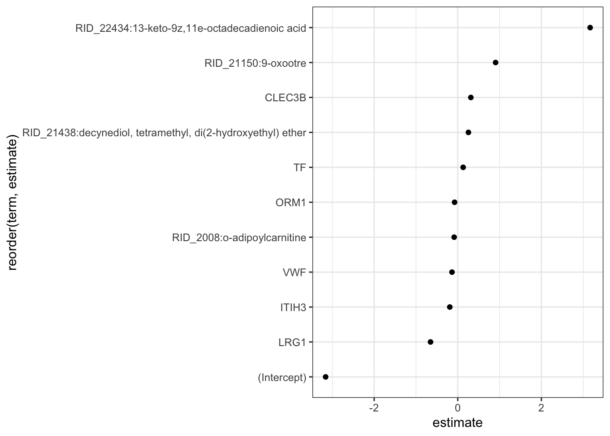
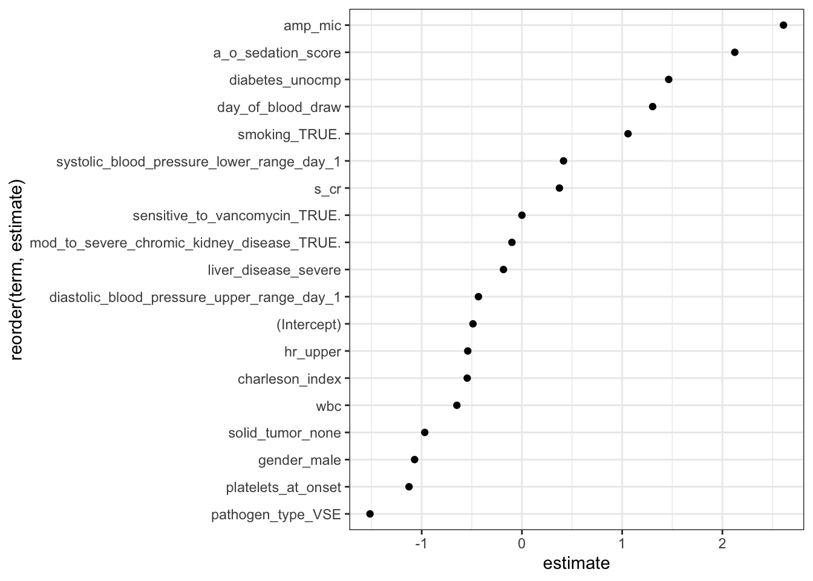
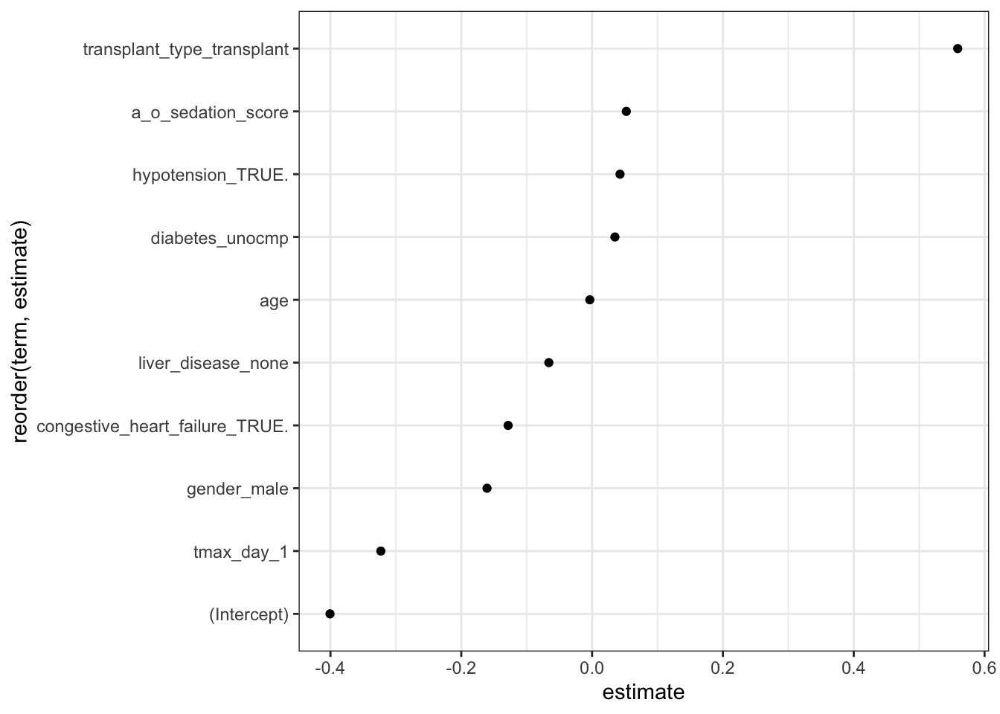
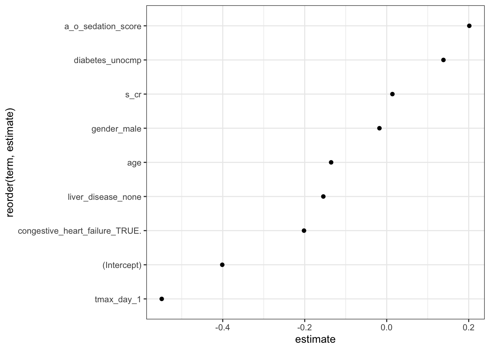
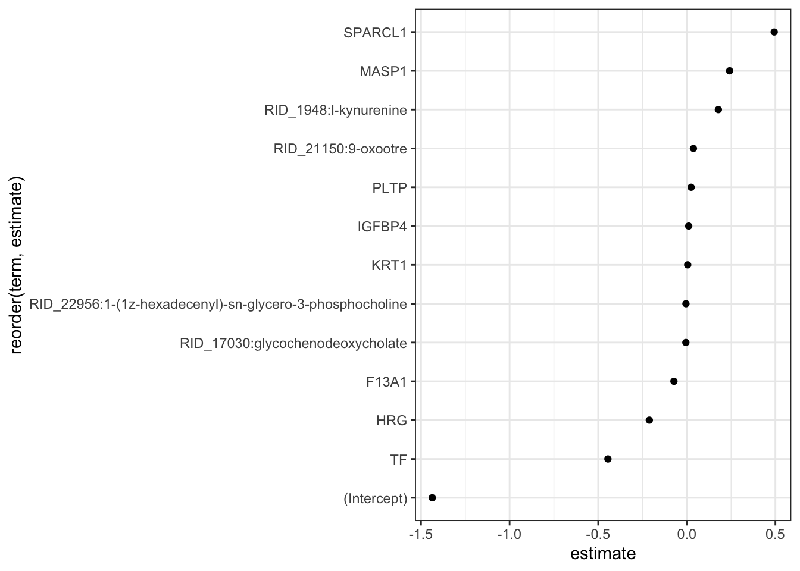
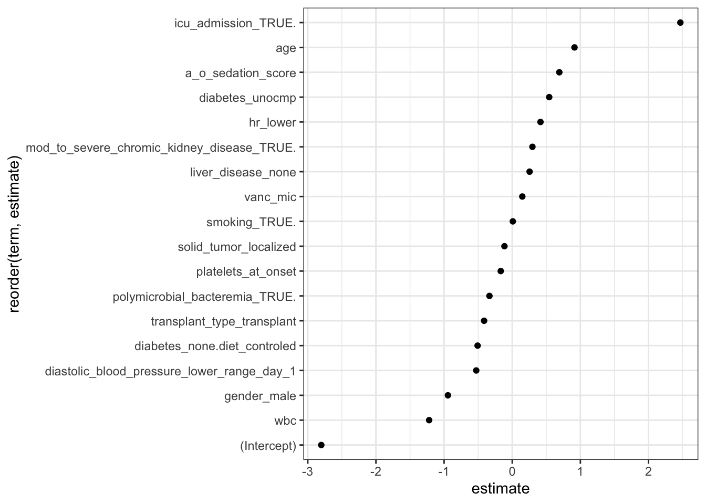

Rows: 105 Columns: 75
── Column specification ────────────────────────────────────────────────────────
Delimiter: ","
chr (29): sample_id, patient_id, gender, race, liver_disease, diabetes, soli...
dbl (22): day_of_blood_draw, age, days_in_hosptial, charleson_index, bmi, ba...
lgl (24): death_during_admission, death_at_one_year, history_of_myocardial_i...
ℹ Use `spec()` to retrieve the full column specification for this data.
ℹ Specify the column types or set `show_col_types = FALSE` to quiet this message.
Code
# Clinical metadata with only the relevant outcomesclinical_metadata_o = clinical_metadata %>%select(sample_id, condition, infection_status, death_during_admission)proteomics_data <-read_csv('proteomics_data_cleaned.csv')
Rows: 273 Columns: 109
── Column specification ────────────────────────────────────────────────────────
Delimiter: ","
chr (4): orientation, uniprotid, locus, Gene
dbl (105): S1, S3, S2, S5, S4, S7, S6, S9, S8, S11, S10, S13, S12, S15, S14,...
ℹ Use `spec()` to retrieve the full column specification for this data.
ℹ Specify the column types or set `show_col_types = FALSE` to quiet this message.
Here we will define a function to do all the modeling steps. This way for each comparison, we only need to provide the model data and model recipie without repeating everything over and over.
Code
# Defining the model Max built as a function, so we can easily apply it to all # of our comparisons.our_model =function(model_data, outcome, model_recipe){# Setting seed at 42 to make reproducible. set.seed(42)# Create train/test splittrain_test_split <-initial_split(model_data,prop =0.8,strata = outcome)train_data <-training(train_test_split)test_data <-testing(train_test_split)# Setting a logistic regression. log_reg <-logistic_reg(mixture =1, # Lasso regressionpenalty =tune() # testing a few different penalty values) %>%set_engine("glmnet") # Creating a model workflowmodel_workflow <-workflow() %>%add_recipe(model_recipe) %>%add_model(log_reg)# 5 fold cross validationcv_folds <-vfold_cv(train_data, v =5)# Tune the penalty parametertune_res <-tune_grid( model_workflow,resamples = cv_folds,grid =5, # Try 5 values of the penaltymetrics =metric_set(roc_auc, accuracy), # generate performance metrics for roc_auc & accuracycontrol =control_grid(save_pred =TRUE))# Show performance metrics and get the best modelbest_result <- tune_res %>%collect_metrics() %>%filter(.metric =="roc_auc") %>%slice_max(mean, n =1) %>%head(1)# Finalize the workflow using the model workflow and our best performing modelfinal_workflow <-finalize_workflow(model_workflow, best_result)# Fit the Final Model on the Training Datafit_workflow <-fit(final_workflow, train_data)# Coefficients for features that seem to matter to the model, the rest have been set to 0 via lasso regressionmodel_summary <-tidy(fit_workflow)model_summary_out = model_summary %>%filter(estimate !=0)# Make predictions on the test data predictions <-predict(fit_workflow, test_data, type ="prob") %>%bind_cols(predict(fit_workflow, test_data)) %>%bind_cols(test_data)# Generate confusion matrix pred <- predictions %>%select(outcome) %>%pull() %>%as.factor() res <- predictions %>%select(.pred_class) %>%pull() %>%as.factor() confusion_matrix <-confusionMatrix(pred, res) confusion_matrix_out <- confusion_matrix$table# Plotting coefficients (Lasso-selected features) p1 <- model_summary_out %>%ggplot(aes(reorder(term, estimate), estimate)) +geom_point() +coord_flip()# Return relevant outputs out <-list(model_summary = model_summary_out,test_results = predictions,model_summary_plot = p1,confusion_matrix = confusion_matrix_out )return(out)}# Extracting the ROC curves from the output of our_model()extract_roc =function(list,outcome,prediction_col){# Convert the outcome variable to a factor predictions <- list$test_results %>%mutate(!!outcome :=as.factor(!!sym(outcome)))# Generate ROC curve data roc_data <-roc_curve(predictions, !!sym(outcome), !!sym(prediction_col)) roc_auc <-roc_auc(predictions, !!sym(outcome), !!sym(prediction_col))# Plot ROC curve p1 <-autoplot(roc_data) +ggtitle(paste0("AUC = ", round(roc_auc$.estimate, 2)))return(p1)}
Healthy vs Infected
First, let’s see how well our model is able to predict healthy vs infected.
Warning: Using an external vector in selections was deprecated in tidyselect 1.1.0.
ℹ Please use `all_of()` or `any_of()` instead.
# Was:
data %>% select(outcome)
# Now:
data %>% select(all_of(outcome))
See <https://tidyselect.r-lib.org/reference/faq-external-vector.html>.
Figure 1. Here we see that the model performs perfectly.
What features are important for this model?
Code
h_v_i_res$model_summary_plot
Figure 2. Here we see the features that are important for the model. Several of these features are likely artifacts of the way the samples were collected. Phtalic anhydride and phthalate are plasticizers. These are almost certainly due to the fact that these samples were collected in different types fo plastic tubes. This was a point the reviewers brought up.
We should either run the model with these features removed, or entirely remove the metabolomics data from this comparison.
Also, note the value of the intercept. This is a reasonable value as there is some class imbalance here since we have 76 infected patients and only 29 uninfected.
Code
# Recipe does all of the feature engineering so that we don't have to do anything else to the input datah_v_i_model_recipe2 <-recipe(infection_status ~ ., data = model_data) %>%update_role(sample_id, new_role ="id") %>%update_role(condition, new_role ="id") %>%update_role(`RID_29112:bis(2-ethylhexyl) phthalate` , new_role ="id") %>%update_role(`RID_22644:phthalic anhydride` , new_role ="id") %>%update_role(death_during_admission, new_role ="id") %>%# id role tells the model not to actually incorporate it as a featureupdate_role(infection_status, new_role ="outcome") %>%# specify target step_dummy(all_nominal_predictors()) %>%# convert string to dummy variablesstep_normalize(all_numeric_predictors()) # normalize numeric features
Figure 3. Model still performs perfectly with problematic metabolites removed.
Code
h_v_i_res2$model_summary_plot

Figure 4. Here we can see the features important to this new model.
E. faecalis vs E. faecium
Now let’s see how well the modeling performs for distinguishing E.faecalis from E.faecium
Code
# Have to discard the healthy data here model_data <- clinical_metadata_o %>%merge(all_t, by ="sample_id") %>% dplyr::filter(condition !="healthy")outcome ="infection_status"# Recipe does all of the feature engineering so that we don't have to do anything else to the input datafaecalis_v_faecium_recipe <-recipe(condition ~ ., data = model_data) %>%update_role(sample_id, new_role ="id") %>%update_role(infection_status, new_role ="id") %>%update_role(death_during_admission, new_role ="id") %>%# id role tells the model not to actually incorporate it as a featureupdate_role(condition, new_role ="outcome") %>%# specify target step_dummy(all_nominal_predictors()) %>%# convert string to dummy variablesstep_normalize(all_numeric_predictors()) # normalize numeric featuresfaecalis_v_faecium_res <-our_model(model_data,"condition",faecalis_v_faecium_recipe)
Figure 5. Here we can see the ROC curve for the E.facalis vs E.faecium prediction. The model looks like it is performing okay here. This isn’t good enough to be clinically useful really.
Note that a simple model where you assume everyone has E. faecalis gets it right 57% of the time since there are 43 patients with faecalis and only 32 with faecium.
Code
faecalis_v_faecium_res$model_summary_plot
Figure 6. Here we can see the features that are most important to the model. Looks very similar to the previous analysis. Several of these proteins and metabolites are immune related.
Signal we are picking up here is probably that people with faecium infections are more likely to be immmunocompromised (this is already established in the literature.)
Metadata alone model
I am curious how well a model made with just the metadata would perform.
I would expect the MIC testing to do a good job of predicting faecium, as facieum isolates are more likely to be ampicillin and vancomycin resistant.
Code
model_data <- clinical_metadata %>%filter(condition !="healthy") %>%# antimicrobial testing was not perfomred for this patientfilter(sample_id !="S18") %>%#getting rid of uninformative columns. Either very little variance, or too many levels to be useful select(-pathogen,-patient_id,-pathogen_source,-infection_status,-bacteremia_recurrence,-race,-death_at_one_year,-peripheral_vascular_disease,-dementia,-hemiplegia,-highly_active_antiretroviral_therapy,-source) %>%mutate(transplant_type =case_when(transplant_type =="none"~"none",TRUE~"transplant")) %>%select_if(~!any(is.na(.))) %>%select(-antibiotic_therapy_before_48_hrs,-antibiotic_therapy_after_48_hrs) %>%mutate(across(c(history_of_myocardial_infarction, congestive_heart_failure, history_of_stroke_or_transient_ischemic_attack, smoking, copd, peptic_ulcer_disaese, mod_to_severe_chromic_kidney_disease, hodgkin_disease, leukemia_or_lymphoma, icu_admission, mechanical_ventilation, polymicrobial_bacteremia, thrombocytopenia_plt_50, hypotension,sensitive_to_vancomycin), as.factor)) %>%mutate(wbc =as.numeric(wbc))
Warning: There was 1 warning in `mutate()`.
ℹ In argument: `wbc = as.numeric(wbc)`.
Caused by warning:
! NAs introduced by coercion
Code
faecalis_v_faecium_m_model_recipe <-recipe(condition ~ ., data = model_data) %>%update_role(sample_id, new_role ="id") %>%update_role(death_during_admission, new_role ="id") %>%# id role tells the model not to actually incorporate it as a featureupdate_role(condition, new_role ="outcome") %>%# specify target step_novel() %>%step_dummy(all_nominal_predictors()) %>%# convert string to dummy variablesstep_impute_knn(wbc) %>%step_normalize(all_numeric_predictors()) # normalize numeric featurescondition_metadata_res =our_model(model_data,"condition", faecalis_v_faecium_m_model_recipe)
→ A | warning: ! There are new levels in `solid_tumor`: "FALSE".
ℹ Consider using step_novel() (`?recipes::step_novel()`) \ before
`step_dummy()` to handle unseen values.
There were issues with some computations A: x1
There were issues with some computations A: x1
Figure 7. The model based on the metadata alone performs well. It actually performs better than our metabolomics/proteomics model.
What features are important?
Code
condition_metadata_res$model_summary_plot

Figure 8. Here we can see that the model values amp_mic as the most important features.
For all intents and purposes, this is cheating because by the time you perform a MIC, you already know what microbe is underlying the infection.
The whole point of our study was to use methods that would allow you to perform a prediction faster (1-3 days in advance
What if we remove variables that allow you to predict microbe identity (and were captured several days after admittance) from the metadata model?
Code
faecalis_v_faecium_m_model_recipe2 <-recipe(condition ~ ., data = model_data) %>%update_role(sample_id, new_role ="id") %>%update_role(death_during_admission, new_role ="id") %>%# id role tells the model not to actually incorporate it as a featureupdate_role(condition, new_role ="outcome") %>%# specify target update_role(pathogen_type,new_role ="id") %>%update_role(sensitive_to_vancomycin,new_role ="id") %>%update_role(amp_mic,new_role ="id") %>%update_role(vanc_mic,new_role ="id") %>%step_novel() %>%step_dummy(all_nominal_predictors()) %>%# convert string to dummy variablesstep_impute_knn(wbc) %>%step_normalize(all_numeric_predictors()) # normalize numeric featurescondition_metadata_res2 =our_model(model_data,"condition", faecalis_v_faecium_m_model_recipe2)
→ A | warning: ! There are new levels in `solid_tumor`: "FALSE".
ℹ Consider using step_novel() (`?recipes::step_novel()`) \ before
`step_dummy()` to handle unseen values.
Figure 8. When we do this, we find that that model performs slightly worse than our metabolomics/proteomics model, but on the same scale.
Code
condition_metadata_res2$model_summary_plot

Figure 9. When we look into what is driving this model, we see that whether or not the patients had a transplant is a strong predictor.
This is not novel, and highlights how if you are immunocompromised, you are more likely to get a E.faecium infection.
What if we take out transplant type from the model?
Code
faecalis_v_faecium_m_model_recipe3 <-recipe(condition ~ ., data = model_data) %>%update_role(sample_id, new_role ="id") %>%update_role(death_during_admission, new_role ="id") %>%update_role(pathogen_type,new_role ="id") %>%update_role(sensitive_to_vancomycin,new_role ="id") %>%update_role(amp_mic,new_role ="id") %>%update_role(vanc_mic,new_role ="id") %>%update_role(transplant_type, new_role ="id")%>%# id role tells the model not to actually incorporate it as a featureupdate_role(condition, new_role ="outcome") %>%# specify target step_novel() %>%step_dummy(all_nominal_predictors()) %>%# convert string to dummy variablesstep_impute_knn(wbc) %>%step_normalize(all_numeric_predictors()) # normalize numeric featurescondition_metadata_res3 =our_model(model_data,"condition", faecalis_v_faecium_m_model_recipe3)
→ A | warning: ! There are new levels in `solid_tumor`: "FALSE".
ℹ Consider using step_novel() (`?recipes::step_novel()`) \ before
`step_dummy()` to handle unseen values.
Figure 10. Here we can see once all of these variables are taken out, the metadata model is essentially worthless.
All this to say, we did not find any clinical variables that are novel and predictive.
Code
condition_metadata_res3$model_summary_plot

Figure 11. Here are the features that are important for the worthless model.
Mortality vs Survival
Now lets see how well we can predict mortality and survival using the proteomics and metabolomics data.
Code
# Have to discard the healthy data here model_data <- clinical_metadata_o %>%merge(all_t, by ="sample_id") %>% dplyr::filter(condition !="healthy") %>% dplyr::mutate(death_during_admission =as.factor(death_during_admission))# Recipe does all of the feature engineering so that we don't have to do anything else to the input datamortality_vs_survival_recipe <-recipe(death_during_admission ~ ., data = model_data) %>%update_role(sample_id, new_role ="id") %>%update_role(infection_status, new_role ="id") %>%update_role(death_during_admission, new_role ="outcome") %>%# id role tells the model not to actually incorporate it as a featureupdate_role(condition, new_role ="id") %>%# specify target step_dummy(all_nominal_predictors()) %>%# convert string to dummy variablesstep_normalize(all_numeric_predictors()) # normalize numeric featuresmortality_vs_survival_res =our_model(model_data,"death_during_admission",mortality_vs_survival_recipe)
Figure 12. Here is a ROC curve of our model. It looks like it is reasonably accurate, but note that there is a big class imbalance here. A simple model where no patients die would get it right 76% of the time (57/75). Our fancy model is only slightly slightly improved on this. We are really hindered by our ability to only test a total of 3 true positives (due to the small sample size).
Table 1. Here a confusion matrix highlights this class imbalance.
Code
mortality_vs_survival_res$model_summary_plot

Figure 13. Here we can see the features important for the model. Note the size of the intercept.
Metadata alone model
I am curious how well a model made with just the metadata would perform.
Code
model_data <- clinical_metadata %>%filter(condition !="healthy") %>%# antimicrobial testing was not perfomred for this patientfilter(sample_id !="S18") %>%#getting rid of uninformative columns. Either very little variance, or too many levels to be useful select(-pathogen,-patient_id,-pathogen_source,-infection_status,-bacteremia_recurrence,-race,-death_at_one_year,-peripheral_vascular_disease,-dementia,-hemiplegia,-highly_active_antiretroviral_therapy,-source) %>%mutate(transplant_type =case_when(transplant_type =="none"~"none",TRUE~"transplant")) %>%select_if(~!any(is.na(.))) %>%select(-antibiotic_therapy_before_48_hrs,-antibiotic_therapy_after_48_hrs) %>%mutate(across(c(history_of_myocardial_infarction, congestive_heart_failure, history_of_stroke_or_transient_ischemic_attack, smoking, copd, peptic_ulcer_disaese, mod_to_severe_chromic_kidney_disease, hodgkin_disease, leukemia_or_lymphoma, icu_admission, mechanical_ventilation, polymicrobial_bacteremia, thrombocytopenia_plt_50, hypotension,sensitive_to_vancomycin, death_during_admission), as.factor)) %>%mutate(wbc =as.numeric(wbc))
Warning: There was 1 warning in `mutate()`.
ℹ In argument: `wbc = as.numeric(wbc)`.
Caused by warning:
! NAs introduced by coercion
Code
mort_m_model_recipe <-recipe(death_during_admission ~ ., data = model_data) %>%update_role(sample_id, new_role ="id") %>%update_role(death_during_admission, new_role ="outcome") %>%# id role tells the model not to actually incorporate it as a feature#update_role(condition, new_role = "outcome") %>% # specify target step_dummy(all_nominal_predictors()) %>%# convert string to dummy variablesstep_impute_knn(wbc) %>%step_normalize(all_numeric_predictors()) # normalize numeric featuresmort_metadata_res =our_model(model_data,"death_during_admission", mort_m_model_recipe)
→ A | warning: ! There are new levels in `solid_tumor`: "FALSE".
ℹ Consider using step_novel() (`?recipes::step_novel()`) \ before
`step_dummy()` to handle unseen values.
There were issues with some computations A: x1
There were issues with some computations A: x1
Figure 14. Here we see that the clinical metadata does better job of predicting mortality than oru
What is going on here?
Code
mort_metadata_res$model_summary_plot

**Figure 15.* Turns out if you get admitted to ICU, that predicts mortality pretty well (obviously). Once again, this is kind of cheating, ICU admission is a feature that is only apparent after a patient is at the hospital for some time.
What if we remove this variable from the model?
Code
mort_m_model_recipe <-recipe(death_during_admission ~ ., data = model_data) %>%update_role(sample_id, new_role ="id") %>%update_role(death_during_admission, new_role ="outcome") %>%# id role tells the model not to actually incorporate it as a featureupdate_role(icu_admission, new_role ="id") %>%# specify target step_dummy(all_nominal_predictors()) %>%# convert string to dummy variablesstep_impute_knn(wbc) %>%step_normalize(all_numeric_predictors()) # normalize numeric featuresmort_metadata_res =our_model(model_data,"death_during_admission", mort_m_model_recipe)
→ A | warning: ! There are new levels in `solid_tumor`: "FALSE".
ℹ Consider using step_novel() (`?recipes::step_novel()`) \ before
`step_dummy()` to handle unseen values.
Figure 16. If you take out the ICU admission, you lose all model performance. You actually would be better off just predicting no one dies.
Conclusion
The results of the lasso regression models show very similar results/ interpretations to the other form of analysis that we conducted.
These analyses should adress Review 2 comments appropriately,
Source Code
---title: "machine_learning_analysis"format: html: theme: flatly code-fold: true code-tools: trueeditor: visual---# Machine Learning Analysis Here we will be performing a machine learning analysis of our proteomics and metabolomics data.We intend to evaluate several models focusing on 3 comparisons:1. Healthy vs Infected patients2. E.faecalis vs E.faecium infected patients3. Mortality vs Surival. Our dataset has low n but high p, so we will apply a lasso regression in hopes that this will prevent overfitting of the data. We will split our ## Loading/Formatting Data```{r}#| label: load-librarieslibrary(dplyr)library(tidymodels)library(caret)library(broom)library(readr)library(ggplot2)library(thematic)ggplot2::theme_set(theme_bw())``````{r}#| label: load-dataclinical_metadata <-read_csv("clinical_metadata.csv") # Clinical metadata with only the relevant outcomesclinical_metadata_o = clinical_metadata %>%select(sample_id, condition, infection_status, death_during_admission)proteomics_data <-read_csv('proteomics_data_cleaned.csv')metabolomics_data <-read_csv('metabolomics_data_cleaned.csv')``````{r}#| label: transpose-data# Transposing proteomicsproteomics_t <- proteomics_data %>%select(-orientation, -uniprotid, -locus) %>%pivot_longer(2:length(.),names_to ="sample_id") %>%pivot_wider(names_from = Gene, values_from = value)# Transposing metabolomics metabolomics_t <- metabolomics_data %>% dplyr::filter(!is.na(compound_name)) %>% dplyr::mutate(row_id =paste0(row_id,":",compound_name)) %>%select(-compound_name) %>%pivot_longer(2:length(.),names_to ="sample_id") %>%pivot_wider(names_from = row_id, values_from = value)# Combining proteomics and metabolomicsall_t = dplyr::inner_join(proteomics_t,metabolomics_t,by ="sample_id")```## Model FunctionHere we will define a function to do all the modeling steps. This way for eachcomparison, we only need to provide the model data and model recipie without repeating everything over and over. ```{r}#| label: defining functions# Defining the model Max built as a function, so we can easily apply it to all # of our comparisons.our_model =function(model_data, outcome, model_recipe){# Setting seed at 42 to make reproducible. set.seed(42)# Create train/test splittrain_test_split <-initial_split(model_data,prop =0.8,strata = outcome)train_data <-training(train_test_split)test_data <-testing(train_test_split)# Setting a logistic regression. log_reg <-logistic_reg(mixture =1, # Lasso regressionpenalty =tune() # testing a few different penalty values) %>%set_engine("glmnet") # Creating a model workflowmodel_workflow <-workflow() %>%add_recipe(model_recipe) %>%add_model(log_reg)# 5 fold cross validationcv_folds <-vfold_cv(train_data, v =5)# Tune the penalty parametertune_res <-tune_grid( model_workflow,resamples = cv_folds,grid =5, # Try 5 values of the penaltymetrics =metric_set(roc_auc, accuracy), # generate performance metrics for roc_auc & accuracycontrol =control_grid(save_pred =TRUE))# Show performance metrics and get the best modelbest_result <- tune_res %>%collect_metrics() %>%filter(.metric =="roc_auc") %>%slice_max(mean, n =1) %>%head(1)# Finalize the workflow using the model workflow and our best performing modelfinal_workflow <-finalize_workflow(model_workflow, best_result)# Fit the Final Model on the Training Datafit_workflow <-fit(final_workflow, train_data)# Coefficients for features that seem to matter to the model, the rest have been set to 0 via lasso regressionmodel_summary <-tidy(fit_workflow)model_summary_out = model_summary %>%filter(estimate !=0)# Make predictions on the test data predictions <-predict(fit_workflow, test_data, type ="prob") %>%bind_cols(predict(fit_workflow, test_data)) %>%bind_cols(test_data)# Generate confusion matrix pred <- predictions %>%select(outcome) %>%pull() %>%as.factor() res <- predictions %>%select(.pred_class) %>%pull() %>%as.factor() confusion_matrix <-confusionMatrix(pred, res) confusion_matrix_out <- confusion_matrix$table# Plotting coefficients (Lasso-selected features) p1 <- model_summary_out %>%ggplot(aes(reorder(term, estimate), estimate)) +geom_point() +coord_flip()# Return relevant outputs out <-list(model_summary = model_summary_out,test_results = predictions,model_summary_plot = p1,confusion_matrix = confusion_matrix_out )return(out)}# Extracting the ROC curves from the output of our_model()extract_roc =function(list,outcome,prediction_col){# Convert the outcome variable to a factor predictions <- list$test_results %>%mutate(!!outcome :=as.factor(!!sym(outcome)))# Generate ROC curve data roc_data <-roc_curve(predictions, !!sym(outcome), !!sym(prediction_col)) roc_auc <-roc_auc(predictions, !!sym(outcome), !!sym(prediction_col))# Plot ROC curve p1 <-autoplot(roc_data) +ggtitle(paste0("AUC = ", round(roc_auc$.estimate, 2)))return(p1)}```## Healthy vs InfectedFirst, let's see how well our model is able to predict healthy vs infected. ```{r}#| label: generate-model-data#| echo: false#| include: truemodel_data <- clinical_metadata_o %>%merge(all_t, by ="sample_id") ``````{r}#| label: create-healthy-v-infected-model-recipe#| echo: false#| include: false# Recipe does all of the feature engineering so that we don't have to do anything else to the input datah_v_i_model_recipe <-recipe(infection_status ~ ., data = model_data) %>%update_role(sample_id, new_role ="id") %>%update_role(condition, new_role ="id") %>%update_role(death_during_admission, new_role ="id") %>%# id role tells the model not to actually incorporate it as a featureupdate_role(infection_status, new_role ="outcome") %>%# specify target step_dummy(all_nominal_predictors()) %>%# convert string to dummy variablesstep_normalize(all_numeric_predictors()) # normalize numeric features``````{r}#| label: view ROC h_v_i_res <-our_model(model_data,"infection_status",h_v_i_model_recipe)extract_roc(h_v_i_res,"infection_status",".pred_infected")```**Figure 1.** Here we see that the model performs perfectly. What features are important for this model?```{r}#| label: view estimates h_v_i_res$model_summary_plot```**Figure 2.** Here we see the features that are important for the model. Several of these features are likely artifacts of the way the samples were collected. Phtalic anhydride and phthalate are plasticizers. These are almost certainly due to the fact that these samples were collected in different types fo plastic tubes. This was a point the reviewers brought up. We should either run the model with these features removed, or entirely remove the metabolomics data from this comparison. Also, note the value of the intercept. This is a reasonable value as there is some class imbalance here since we have 76 infected patients and only 29 uninfected. ```{r}# Recipe does all of the feature engineering so that we don't have to do anything else to the input datah_v_i_model_recipe2 <-recipe(infection_status ~ ., data = model_data) %>%update_role(sample_id, new_role ="id") %>%update_role(condition, new_role ="id") %>%update_role(`RID_29112:bis(2-ethylhexyl) phthalate` , new_role ="id") %>%update_role(`RID_22644:phthalic anhydride` , new_role ="id") %>%update_role(death_during_admission, new_role ="id") %>%# id role tells the model not to actually incorporate it as a featureupdate_role(infection_status, new_role ="outcome") %>%# specify target step_dummy(all_nominal_predictors()) %>%# convert string to dummy variablesstep_normalize(all_numeric_predictors()) # normalize numeric features``````{r}h_v_i_res2 <-our_model(model_data,"infection_status",h_v_i_model_recipe2)extract_roc(h_v_i_res2,"infection_status",".pred_infected")```**Figure 3.** Model still performs perfectly with problematic metabolites removed. ```{r}h_v_i_res2$model_summary_plot```**Figure 4.** Here we can see the features important to this new model.## *E. faecalis* vs *E. faecium*Now let's see how well the modeling performs for distinguishing *E.faecalis* from *E.faecium*```{r}#| label: faecalis v faecium model # Have to discard the healthy data here model_data <- clinical_metadata_o %>%merge(all_t, by ="sample_id") %>% dplyr::filter(condition !="healthy")outcome ="infection_status"# Recipe does all of the feature engineering so that we don't have to do anything else to the input datafaecalis_v_faecium_recipe <-recipe(condition ~ ., data = model_data) %>%update_role(sample_id, new_role ="id") %>%update_role(infection_status, new_role ="id") %>%update_role(death_during_admission, new_role ="id") %>%# id role tells the model not to actually incorporate it as a featureupdate_role(condition, new_role ="outcome") %>%# specify target step_dummy(all_nominal_predictors()) %>%# convert string to dummy variablesstep_normalize(all_numeric_predictors()) # normalize numeric featuresfaecalis_v_faecium_res <-our_model(model_data,"condition",faecalis_v_faecium_recipe)``````{r}#| label: model ROCsextract_roc(faecalis_v_faecium_res,"condition",".pred_faecalis")```**Figure 5.** Here we can see the ROC curve for the E.facalis vs E.faecium prediction. The model looks like it is performing okay here. This isn't good enough to be clinically useful really. Note that a simple model where you assume everyone has E. faecalisgets it right 57% of the time since there are 43 patients with faecalis and only 32 with faecium.```{r}#| label: model estimates#| faecalis_v_faecium_res$model_summary_plot```**Figure 6.** Here we can see the features that are most important to the model. Looks very similar to the previous analysis. Several of these proteins and metabolites are immune related. Signal we are picking up here is probably that people with faecium infections are more likely to be immmunocompromised (this is already established in the literature.)### Metadata alone modelI am curious how well a model made with just the metadata would perform. I would expect the MIC testing to do a good job of predicting faecium, as facieum isolates are more likely to be ampicillin and vancomycin resistant. ```{r}model_data <- clinical_metadata %>%filter(condition !="healthy") %>%# antimicrobial testing was not perfomred for this patientfilter(sample_id !="S18") %>%#getting rid of uninformative columns. Either very little variance, or too many levels to be useful select(-pathogen,-patient_id,-pathogen_source,-infection_status,-bacteremia_recurrence,-race,-death_at_one_year,-peripheral_vascular_disease,-dementia,-hemiplegia,-highly_active_antiretroviral_therapy,-source) %>%mutate(transplant_type =case_when(transplant_type =="none"~"none",TRUE~"transplant")) %>%select_if(~!any(is.na(.))) %>%select(-antibiotic_therapy_before_48_hrs,-antibiotic_therapy_after_48_hrs) %>%mutate(across(c(history_of_myocardial_infarction, congestive_heart_failure, history_of_stroke_or_transient_ischemic_attack, smoking, copd, peptic_ulcer_disaese, mod_to_severe_chromic_kidney_disease, hodgkin_disease, leukemia_or_lymphoma, icu_admission, mechanical_ventilation, polymicrobial_bacteremia, thrombocytopenia_plt_50, hypotension,sensitive_to_vancomycin), as.factor)) %>%mutate(wbc =as.numeric(wbc))faecalis_v_faecium_m_model_recipe <-recipe(condition ~ ., data = model_data) %>%update_role(sample_id, new_role ="id") %>%update_role(death_during_admission, new_role ="id") %>%# id role tells the model not to actually incorporate it as a featureupdate_role(condition, new_role ="outcome") %>%# specify target step_novel() %>%step_dummy(all_nominal_predictors()) %>%# convert string to dummy variablesstep_impute_knn(wbc) %>%step_normalize(all_numeric_predictors()) # normalize numeric featurescondition_metadata_res =our_model(model_data,"condition", faecalis_v_faecium_m_model_recipe)extract_roc(condition_metadata_res,"condition",".pred_faecalis")```**Figure 7.** The model based on the metadata alone performs well. It actually performs better than our metabolomics/proteomics model.What features are important?```{r}condition_metadata_res$model_summary_plot```**Figure 8.** Here we can see that the model values amp_mic as the most important features. For all intents and purposes, this is cheating because by the time you perform a MIC, you already know what microbe is underlying the infection. The whole point of our study was to use methods that would allow you to perform a prediction faster (1-3 days in advanceWhat if we remove variables that allow you to predict microbe identity (and were captured several days after admittance) from the metadata model?```{r}faecalis_v_faecium_m_model_recipe2 <-recipe(condition ~ ., data = model_data) %>%update_role(sample_id, new_role ="id") %>%update_role(death_during_admission, new_role ="id") %>%# id role tells the model not to actually incorporate it as a featureupdate_role(condition, new_role ="outcome") %>%# specify target update_role(pathogen_type,new_role ="id") %>%update_role(sensitive_to_vancomycin,new_role ="id") %>%update_role(amp_mic,new_role ="id") %>%update_role(vanc_mic,new_role ="id") %>%step_novel() %>%step_dummy(all_nominal_predictors()) %>%# convert string to dummy variablesstep_impute_knn(wbc) %>%step_normalize(all_numeric_predictors()) # normalize numeric featurescondition_metadata_res2 =our_model(model_data,"condition", faecalis_v_faecium_m_model_recipe2)extract_roc(condition_metadata_res2,"condition",".pred_faecalis")```**Figure 8.** When we do this, we find that that model performs slightly worse than our metabolomics/proteomics model, but on the same scale.```{r}condition_metadata_res2$model_summary_plot```**Figure 9.** When we look into what is driving this model, we see that whether or not the patients had a transplant is a strong predictor. This is not novel, and highlights how if you are immunocompromised, you are more likely to get a E.faecium infection. What if we take out transplant type from the model?```{r}faecalis_v_faecium_m_model_recipe3 <-recipe(condition ~ ., data = model_data) %>%update_role(sample_id, new_role ="id") %>%update_role(death_during_admission, new_role ="id") %>%update_role(pathogen_type,new_role ="id") %>%update_role(sensitive_to_vancomycin,new_role ="id") %>%update_role(amp_mic,new_role ="id") %>%update_role(vanc_mic,new_role ="id") %>%update_role(transplant_type, new_role ="id")%>%# id role tells the model not to actually incorporate it as a featureupdate_role(condition, new_role ="outcome") %>%# specify target step_novel() %>%step_dummy(all_nominal_predictors()) %>%# convert string to dummy variablesstep_impute_knn(wbc) %>%step_normalize(all_numeric_predictors()) # normalize numeric featurescondition_metadata_res3 =our_model(model_data,"condition", faecalis_v_faecium_m_model_recipe3)extract_roc(condition_metadata_res3,"condition",".pred_faecalis")```**Figure 10.** Here we can see once all of these variables are taken out, the metadata model is essentially worthless. All this to say, we did not find any clinical variables that are novel and predictive. ```{r}condition_metadata_res3$model_summary_plot```**Figure 11.** Here are the features that are important for the worthless model. ## Mortality vs SurvivalNow lets see how well we can predict mortality and survival using the proteomics and metabolomics data. ```{r}# Have to discard the healthy data here model_data <- clinical_metadata_o %>%merge(all_t, by ="sample_id") %>% dplyr::filter(condition !="healthy") %>% dplyr::mutate(death_during_admission =as.factor(death_during_admission))# Recipe does all of the feature engineering so that we don't have to do anything else to the input datamortality_vs_survival_recipe <-recipe(death_during_admission ~ ., data = model_data) %>%update_role(sample_id, new_role ="id") %>%update_role(infection_status, new_role ="id") %>%update_role(death_during_admission, new_role ="outcome") %>%# id role tells the model not to actually incorporate it as a featureupdate_role(condition, new_role ="id") %>%# specify target step_dummy(all_nominal_predictors()) %>%# convert string to dummy variablesstep_normalize(all_numeric_predictors()) # normalize numeric featuresmortality_vs_survival_res =our_model(model_data,"death_during_admission",mortality_vs_survival_recipe)``````{r}extract_roc(mortality_vs_survival_res,"death_during_admission",".pred_FALSE")```**Figure 12.** Here is a ROC curve of our model. It looks like it is reasonably accurate, but note that there is a big class imbalance here. A simple model where no patients die would get it right 76% of the time (57/75). Our fancy model is only slightly slightly improved on this. We are really hindered by our ability to only test a total of 3 true positives (due to the small sample size).```{r}mortality_vs_survival_res$confusion_matrix```**Table 1.** Here a confusion matrix highlights this class imbalance. ```{r}mortality_vs_survival_res$model_summary_plot```**Figure 13.** Here we can see the features important for the model. Note the size of the intercept. ### Metadata alone modelI am curious how well a model made with just the metadata would perform. ```{r}model_data <- clinical_metadata %>%filter(condition !="healthy") %>%# antimicrobial testing was not perfomred for this patientfilter(sample_id !="S18") %>%#getting rid of uninformative columns. Either very little variance, or too many levels to be useful select(-pathogen,-patient_id,-pathogen_source,-infection_status,-bacteremia_recurrence,-race,-death_at_one_year,-peripheral_vascular_disease,-dementia,-hemiplegia,-highly_active_antiretroviral_therapy,-source) %>%mutate(transplant_type =case_when(transplant_type =="none"~"none",TRUE~"transplant")) %>%select_if(~!any(is.na(.))) %>%select(-antibiotic_therapy_before_48_hrs,-antibiotic_therapy_after_48_hrs) %>%mutate(across(c(history_of_myocardial_infarction, congestive_heart_failure, history_of_stroke_or_transient_ischemic_attack, smoking, copd, peptic_ulcer_disaese, mod_to_severe_chromic_kidney_disease, hodgkin_disease, leukemia_or_lymphoma, icu_admission, mechanical_ventilation, polymicrobial_bacteremia, thrombocytopenia_plt_50, hypotension,sensitive_to_vancomycin, death_during_admission), as.factor)) %>%mutate(wbc =as.numeric(wbc))mort_m_model_recipe <-recipe(death_during_admission ~ ., data = model_data) %>%update_role(sample_id, new_role ="id") %>%update_role(death_during_admission, new_role ="outcome") %>%# id role tells the model not to actually incorporate it as a feature#update_role(condition, new_role = "outcome") %>% # specify target step_dummy(all_nominal_predictors()) %>%# convert string to dummy variablesstep_impute_knn(wbc) %>%step_normalize(all_numeric_predictors()) # normalize numeric featuresmort_metadata_res =our_model(model_data,"death_during_admission", mort_m_model_recipe)extract_roc(mort_metadata_res,"death_during_admission",".pred_FALSE")```**Figure 14.** Here we see that the clinical metadata does better job of predicting mortality than oruWhat is going on here? ```{r}mort_metadata_res$model_summary_plot```**Figure 15.* Turns out if you get admitted to ICU, that predicts mortality pretty well (obviously). Once again, this is kind of cheating, ICU admission is a feature that is only apparent after a patient is at the hospital for some time. What if we remove this variable from the model?```{r}mort_m_model_recipe <-recipe(death_during_admission ~ ., data = model_data) %>%update_role(sample_id, new_role ="id") %>%update_role(death_during_admission, new_role ="outcome") %>%# id role tells the model not to actually incorporate it as a featureupdate_role(icu_admission, new_role ="id") %>%# specify target step_dummy(all_nominal_predictors()) %>%# convert string to dummy variablesstep_impute_knn(wbc) %>%step_normalize(all_numeric_predictors()) # normalize numeric featuresmort_metadata_res =our_model(model_data,"death_during_admission", mort_m_model_recipe)extract_roc(mort_metadata_res,"death_during_admission",".pred_FALSE")```**Figure 16.** If you take out the ICU admission, you lose all model performance.You actually would be better off just predicting no one dies. # Conclusion1. The results of the lasso regression models show very similar results/ interpretations to the other form of analysis that we conducted. 2. These analyses should adress Review 2 comments appropriately,